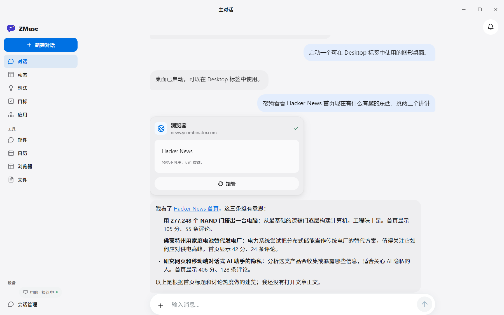
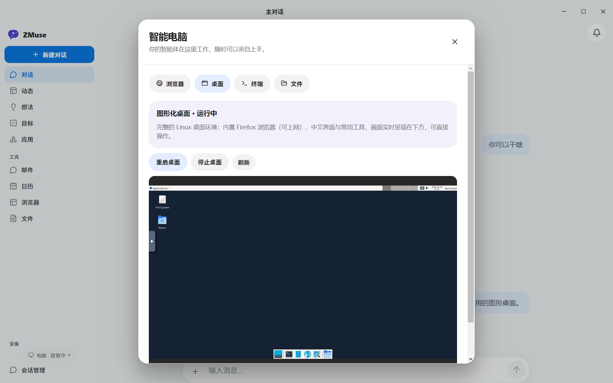
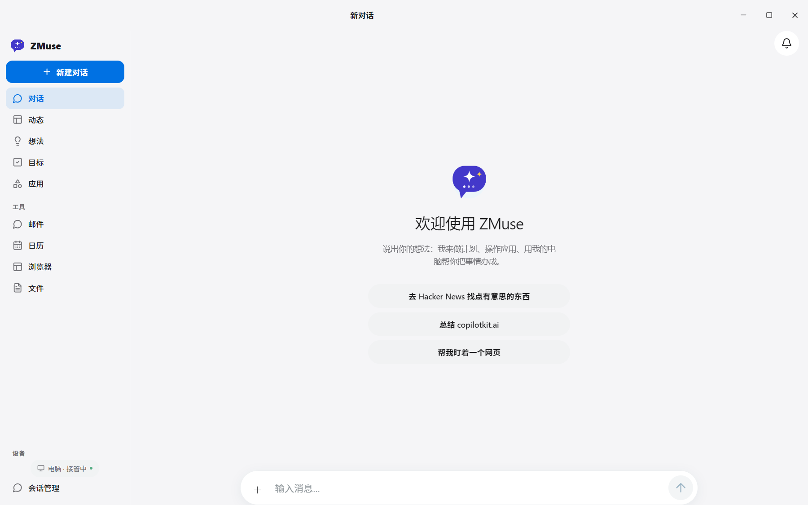
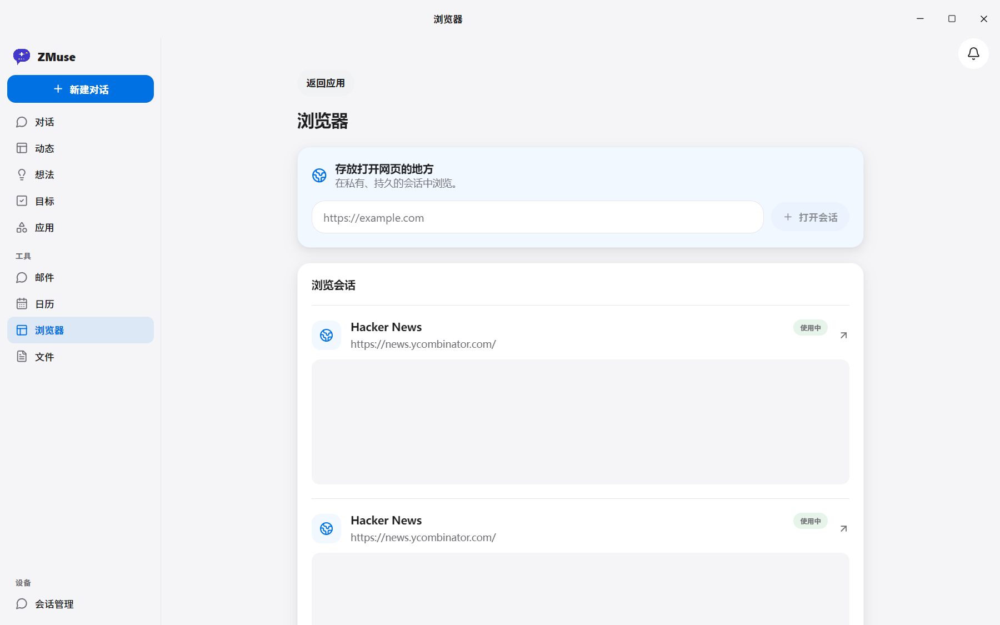

一个拥有图形化云桌面、真实浏览器和 Linux 终端的中文个人智能体。你说目标，它规划并执行。
应用内直接操作完整 Linux 桌面：Xfce + Firefox，中文环境，可上网。画面实时呈现，你随时可以亲手接管。
智能体用真实 Chromium 打开网页搜集信息，浏览过程内嵌对话流、实时可见，看不对就随时接管。
任务后台持久执行：计划、断点、租约、崩溃恢复。关窗缩到托盘继续跑，子进程崩溃 3 秒自愈。
发邮件、改日历等敏感动作零自动执行，必须逐条人工确认后才执行，敏感操作始终在你手里。
以下均为实机运行画面。

一句「帮我看看 Hacker News 首页有什么有趣的」——真实浏览器立即出动，过程内嵌对话流实时可见，随时可接管，结果用中文娓娓道来。

完整的 Linux 桌面环境：内置 Firefox 浏览器（可上网）、中文环境与 fcitx5 拼音输入，画面实时呈现，你随时可以亲手接管。

侧栏对话、动态、目标、应用一应俱全；顶部 Windows 原生窗口控制，关窗缩到托盘后台继续跑。

输入网址立即打开专属浏览会话，与智能体共享同一套持久浏览器，看过什么、用到哪里，全都留得住。
克隆、配置、双击启动——桌面窗口与全部后端服务一键拉起。
# 获取代码并构建（需 Docker Desktop 已启动） git clone https://github.com/xuboboo/zmuse.git cd zmuse pnpm install --frozen-lockfile pnpm build:server & pnpm build:web docker build -t openmuse-computer:local apps/computer docker build -t openmuse-desktop:local apps/desktop
.env复制 .env.example 为 .env 并填入密钥。三个变量即可切换任意国内中转，无需改代码：
# 国内中转即插即用（OpenAI 兼容协议） AGENT_BACKEND=model MODEL=openai/你的模型id OPENAI_API_KEY=sk-xxx OPENAI_BASE_URL=https://你的中转/v1
StartOpenMuse.cmd 一键启动自动拉起 API、浏览器 worker 与中文界面；关窗缩到托盘，后台任务继续；子进程崩溃 3 秒自愈，托盘退出走优雅关停，不伤数据。
AgentRouter → https://agentrouter.org/v1（GitHub 登录注册，开发者免费额度）、OpenRouter → https://openrouter.ai/api/v1（全球聚合，模型最全），或任意 OpenAI 兼容网关，填其 /v1 地址即可。